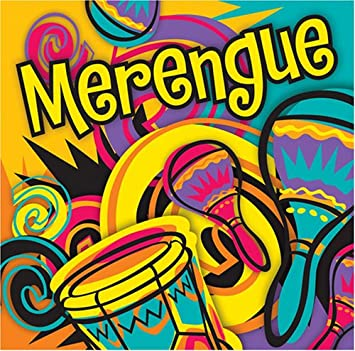

El merengue es un género musical caribeño que se originó a mediados del siglo XIX en República Dominicanay ha trascendido fronteras pues aunque es bailado en todo el Continente Americano, también es popular en distintas partes de Europa. donde es considerado, junto con la salsa, como uno de los grandes géneros musicales bailables que identifican al hispanoamericano.En sus orígenes, el merengue dominicano era interpretado con instrumentos de cuerda.donde es considerado, junto con la salsa, como uno de los grandes géneros musicales bailables que identifican al hispanoamericano Uno de las personas más importante en el desarrollo del merengue fue el dictador Rafael Leonidas Trujillo. Antes del reinado de Trujillo, el merengue fue asociado con las personas del campo y los regiones rurales. Juan Francisca García trató de ampliar la popularidad del merengue en las clases altas. En 1918, publicó el primero arreglo del merengue. En 1922, el merengue fue tocado en un club social. Pero en ambos casos, la población alta rechazó el merengue. En el caso del club, muchas personas sal ieron porque fueron enojados que la música grosera no debió estar en su lugar elegante. Cuando Trujillo llegó al poder en 1930, el merengue todavía fue de estatua de la clase baja. Trujillo vino de una familia campesina y le encontaba el merengue. Dura nte todas de las fiestas de sus campañas tenía una orquesta para tocar el merengue. Trujillo trató de forzar la élite a escuchar al merengue, y la élite cobró aversión a Trujillo por su origen pobre, su música grosera y su régimen. Él quiso dar la impre sion de que era refinado y culturado y para esto necesitó el apoyo de las clases altas. Quiso cambiar el merengue a música refinada para la élite. Ajustó la banda respetable de Luis Albertí, Lira de Yaque, en 1932 a fin de popularizar el merengue. Albe rtí añadó la güira y la tambora a su orquesta de jazz y incluyó el merengue en su colección de canciónes. Convirtió el merengue al baile nacional de la Republica Dominicana. La élite aprobó a esta música culturada de Luis Albertí y además el merengue.

MERENGUEEncuentra aquí información sobre el género merengue en inglés, español y los cantantes más influyentes en los últimas decadas. Ver más |